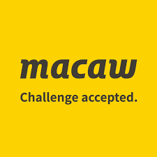

YourSurprise

YourSuprise is een cadeau webshop die aangepaste persoonlijke cadeaus maakt.
ze doen dit vanuit hun basis in Zierikzee,
een groot sellingpoint van het bedrijf zijn de cadeaus maar,
dat is niet het enige. IT is van groot belang erbij en maakt alle software die het bedrijf nodig heeft.
zoals inventory management of de website een extra oppep geven.
Macaw

Het motto van Macaw "Challenge accepted" zegt veel over het bedrijf.
Ze zien opdrachten als uitdagingen en gaan daarom voor altijd de beste oplossing.
Het is een echt data-analyse bedrijf,
die ook waarde hecht aan design en technische oplossingen.
Een ander sterk punt van het bedrijf is haar verband met microsoft,
daar krijgen ze de allernieuwste software van, waardoor ze een voordeel hebben op de competitie
Veracode
Veracode is opgericht in 2006 als een IT beveiligingsbedrijf.
Veracode biedt een geautomatiseerde cloud-based service voor het beveiligen van verschillende soorten applicaties.
Waaronder voor; webapplicaties, mobiele applicaties, externe applicaties, etc..
Ze zijn trots over hun zogenoemde hacker mindset.
Dit houd in dat ze nieuwe dingen proberen en willen weten hoe dingen in elkaar zitten.